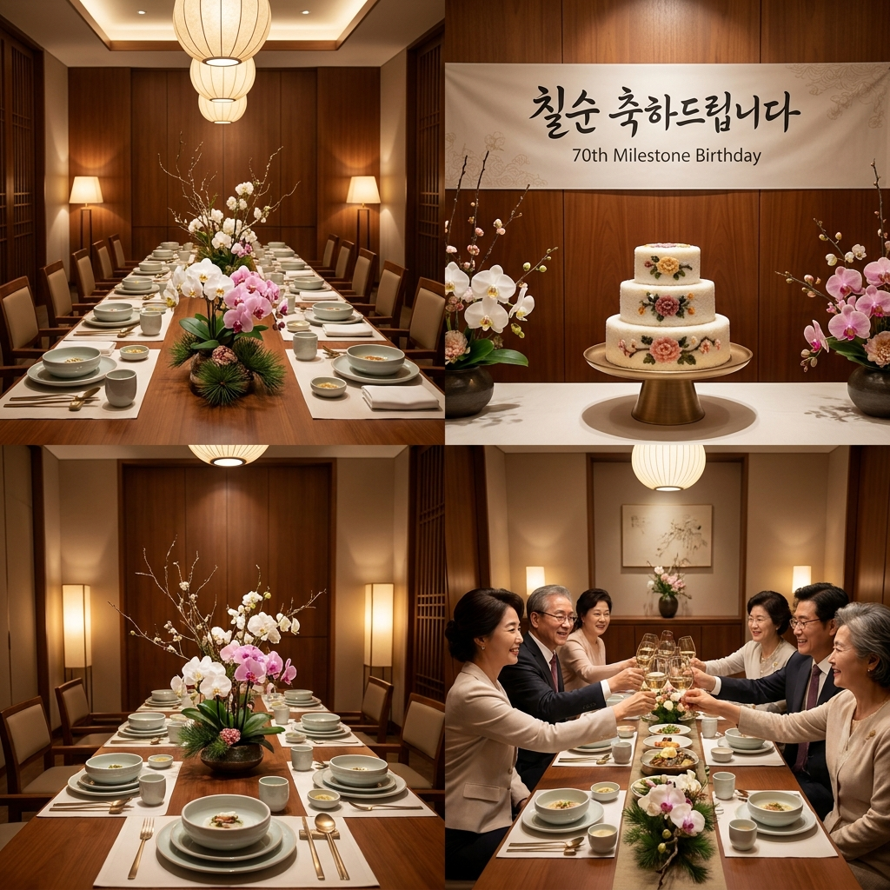
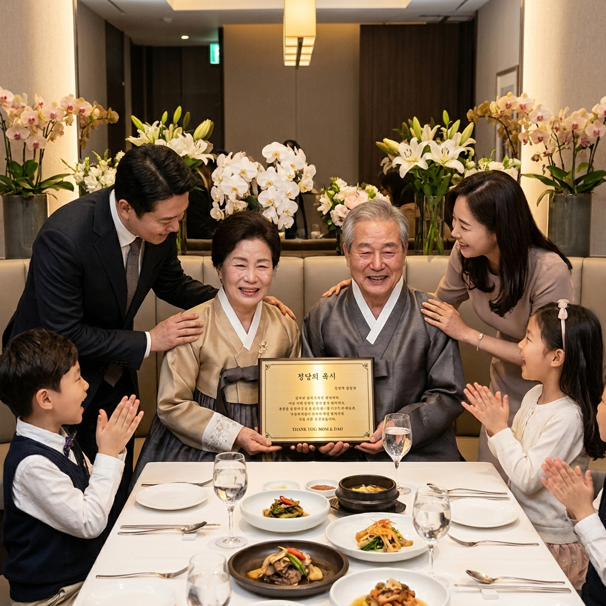

칠순·팔순 잔치 준비 순서와 식당·호텔 비용 비교 — 가족 식사 vs 연회장 예산 체크리스트
부모님의 고희(칠순)와 산수(팔순)는 과거의 번잡한 대형 잔치 대신 직계가족 중심의 고급 식사 모임이나 프라이빗 룸 연회로 트렌드가 변화했습니다.
부모님의 체력과 가족 구성원의 의견을 반영해 식당 유형과 규모를 결정하는 것이 가장 중요합니다. 한정식 프라이빗 룸, 특급호텔 뷔페, 중소규모 연회홀 등 장소 선택에 따라 1인당 식대와 부대비용(상차림·현수막·감사패) 편차가 크게 발생합니다. D-60부터 단계별로 챙겨야 할 준비 타임라인과 형제간 비용 분담 관례를 실무 중심으로 정리했습니다.

고급 한정식 프라이빗 룸에 단아하게 차려진 칠순 축하 상차림 / AI 제작 이미지
01 | 달라진 칠순·팔순 문화 — 대규모 잔치에서 프라이빗 모임으로
과거 환갑이나 칠순 잔치는 예식장이나 대형 뷔페를 빌려 수백 명의 하객을 초대하고 국악 밴드를 부르는 잔치 형식으로 치러졌습니다.
그러나 기대 수명이 80세를 훌쩍 넘긴 100세 시대에 접어들며, 부모님들 스스로가 지인들에게 축의금 부담을 주는 대규모 행사를 극구 사양하는 추세입니다.
오늘날 칠순과 팔순 행사의 80% 이상은 **직계가족(자녀, 사위, 며느리, 손주) 10~15명 안팎**이 오붓하게 모이는 프라이빗 다이닝 형태로 진행됩니다.
대신 식사의 퀄리티를 한층 높이고, 감사패 증정식, 추억 영상 상영, 용돈 이벤트 등 정성스러운 프로그램을 알차게 구성하여 가족 간의 유대를 다지는 것이 최신 경향입니다.
02 | 행사 규모별 유형 비교 — 직계가족 식사 vs 친척 모임 vs 연회장
부모님의 교우 관계와 친인척 왕래 정도에 따라 행사 규모는 크게 세 가지로 분류됩니다.
| 유형 구분 |
참석 인원 범위 |
주요 장소 형태 |
행사 분위기 및 특징 |
| 직계가족 중심형 (가장 선호) |
8명 ~ 15명 내외 |
고급 한정식 룸 / 호텔 일식·중식 룸 |
프라이빗하고 깊이 있는 대화, 부모님 피로도 최소화 |
| 친인척 초대형 |
20명 ~ 35명 내외 |
호텔 뷔페 PDR(별실) / 프리미엄 한정식 별채 |
양가 형제자매 및 사촌 모임, 적당한 축하 분위기 |
| 소규모 연회장형 |
40명 ~ 60명 이상 |
호텔 중소연회홀 / 전문 파티룸 |
지인 및 친척 다수 참석, 전문 사회자 및 음향 필요 |
부모님의 건강 상태나 거동이 불편하시다면 이동 거리가 짧고 좌석이 안락한 직계가족 중심의 단독 룸 식사를 최우선으로 검토하는 것이 바람직합니다.
03 | 장소 유형별 1인당 식대 및 총예산 비교표 (한정식 룸 vs 호텔 뷔페)
장소에 따른 1인당 식대와 12명 기준(직계가족) 예상 식사 비용 비교표입니다.
| 장소 카테고리 |
1인당 식대 범위 |
12명 기준 식사 총액 |
장점 및 고려사항 |
| 전문 한정식 단독 룸 |
60,000 ~ 100,000원 |
약 72만 ~ 120만 원 |
코스 요리 서빙으로 대화 집중 용이, 부모님 선호도 최고 |
| 특급호텔 뷔페 (PDR 룸) |
140,000 ~ 190,000원 |
약 170만 ~ 230만 원 |
음식 종류 다양, 손주들 선호, 주말 룸 미니멈 개런티 확인 필수 |
| 호텔 중식 / 일식 코스 |
120,000 ~ 180,000원 |
약 140만 ~ 210만 원 |
조용하고 격조 높은 서비스, 고급스러운 상차림 연출 |
| 일반 숯불갈비 / 한우 전문점 |
50,000 ~ 80,000원 |
약 60만 ~ 100만 원 |
푸짐한 고기 식사, 룸 내부 연기 및 소음 여부 사전 체크 |
호텔 뷔페의 프라이빗 룸(PDR)을 이용할 경우 식대 외에 룸 이용 보증금(최소 주문 금액 또는 추가 룸 차지 5만~10만 원)이 발생할 수 있으므로 예약 시 확인이 필수적입니다.
04 | 상차림·현수막·꽃바구니 부대비용 현실적 견적 기준
식대 외에 축하 분위기를 돋우기 위해 지출되는 부대 항목들의 평균 시세입니다.
💐 칠순·팔순 부대비용 세부 항목 정리 (평균 시세)
• 맞춤 현수막 (가로 2m 내외): 15,000 ~ 30,000원 (온라인 주문 제작 후 부착)
• 생화 센터피스 / 대형 꽃바구니: 70,000 ~ 120,000원 (행사 후 부모님 댁으로 전달)
• 맞춤 떡케이크 (앙금 플라워 2~3단): 80,000 ~ 150,000원 (레터링 문구 포함)
• 크리스탈 / 금도금 감사패: 80,000 ~ 180,000원 (사진 및 감사 문안 각인)
• 스냅 사진 촬영 (출장 1~2시간): 150,000 ~ 250,000원 (가족 단체 원판 및 자연스러운 컷)
• 부대비용 합계: 대략 40만 ~ 70만 원 선에서 완벽하게 세팅 가능

자녀들이 준비한 감사패와 꽃다발을 전달하는 감동적인 순간 / AI 제작 이미지
05 | D-60부터 시작하는 칠순·팔순 준비 단계별 타임라인 체크리스트
행사일이 임박해 서두르면 인기 있는 룸 예약이 마감되므로 2달 전부터 순차적으로 준비해야 합니다.
📅 칠순·팔순 행사 준비 타임라인 체크리스트
• D-60 (2달 전): 부모님 생신 전후 주말 날짜 확정, 참석 가능 인원 1차 파악, 식당 후보지 답사 및 룸 예약 (계약금 입금)
• D-30 (1달 전): 형제간 비용 분담 합의, 현수막 디자인 확정, 떡케이크 및 꽃바구니 주문 예약
• D-14 (2주 전): 감사패 문구 작성 및 제작 발주, 참석 인원 최종 컨펌 및 식당 코스 메뉴 확정, 빔프로젝터 대여 여부 확인
• D-3 (3일 전): 현수막, 감사패 수령 확인, 용돈 봉투(현금 신권 교환) 준비, 카메라 또는 스냅 작가 재확인
• 당일: 행사 40분 전 룸 도착하여 현수막 부착, 떡케이크 및 상차림 세팅, 부모님 픽업 안내
06 | 자녀·형제간 비용 분담 관례와 회비 정산 방법
비용 정산 문제는 형제간 갈등의 원인이 될 수 있으므로 사전에 원칙을 정해야 합니다.
• 1/N 균등 분담 방식 (가장 보편적): 형제·자매가 자녀 수와 관계없이 총 소요 비용(식대+부대비용)을 균등하게 나누어 부담하는 방식입니다. 가장 뒷말이 없고 깔끔합니다.
• 역할 분담 방식: 맏이가 식대를 결제하고, 둘째가 상차림·감사패·케이크 등 부대비용을, 셋째가 부모님 용돈이나 숙소/교통비를 전담하는 방식입니다.
• 부모님 축하 용돈: 식사비 분담과 별개로 부모님께 드리는 순수 용돈은 각 가정의 형편에 따라 개별 봉투로 전달하거나, 사전에 협의해 1인당 50만~100만 원씩 모아 합산 전달하는 것이 일반적입니다.
07 | 부모님 감사패 문구 예시와 헌정 영상 준비 팁
부모님께 낭독해 드리는 감사패 문안은 진심 어린 마음을 담아야 감동이 배가됩니다.
📜 부모님 칠순·팔순 감사패 표준 문구 예시
"사랑하는 아버지(어머니), 지난 세월 묵묵히 흘리신 땀방울과 한없는 사랑이 있었기에 오늘 저희가 바르고 건강하게 성장할 수 있었습니다.
가족을 위해 헌신해 오신 아버지의 고단했던 시간들을 마음 깊이 기억하며 존경과 감사를 바칩니다.
칠순(팔순)을 진심으로 축하드리며, 앞으로의 날들은 저희가 든든한 버팀목이 되어 꽃길만 걷게 해드리겠습니다.
오래오래 건강하게 저희 곁에 머물러 주세요. 사랑합니다.
- 사랑하는 아들, 딸, 사위, 며느리, 손주 일동 올림 -"
08 | 친척·지인 답례품 품목 추천과 적정 금액대
참석해 주신 친척 분들이 계실 경우 빈손으로 보내지 않고 감사의 마음을 담은 작은 답례품을 준비합니다.
• 소금 세트 (명품 신안 천일염/히말라야 핑크솔트): '빛과 소금'처럼 건강하고 오래 사시라는 의미가 담겨 있어 어르신들이 가장 선호 (15,000 ~ 25,000원 선)
• 고급 수건 세트 (송월타월 등 40수 고중량): 자수로 부모님 존함과 행사 날짜를 새긴 고급 타월 2~3매 세트 (12,000 ~ 20,000원 선)
• 수제 과일청 / 꿀 세트: 보관이 용이하고 실생활에서 유용하게 섭취할 수 있는 실속형 선물 (20,000 ~ 30,000원 선)
09 | 당일 행사 진행 식순 매뉴얼과 진행자 멘트 요령
장남이나 말솜씨 좋은 사위가 마이크를 잡고 부드럽게 진행할 수 있는 15분 식전 식순입니다.
🎤 칠순·팔순 프라이빗 룸 표준 식순
1. 개회 및 환영 인사 (1분): "바쁘신 와중에도 아버님의 칠순을 축하하기 위해 모여주신 가족 여러분 환영합니다."
2. 부모님 약력 및 추억 소개 (2분): 살아오신 발자취와 감사의 말씀 낭독
3. 생신 축하 노래 & 촛불 점화 (3분): 온 가족이 함께 생신 축하 노래 제창 및 케이크 커팅
4. 가족 대표 감사패 및 꽃다발 증정 (3분): 감사패 문안 낭독 후 부모님께 전달 및 포옹
5. 부모님 답사 말씀 (2분): 부모님의 소감 한마디 경청
6. 가족 단체 사진 촬영 (3분): 상차림 현수막 앞 가족 단체 사진 및 소그룹 촬영
7. 건배 제의 및 식사 시작: 다 함께 축하 건배 후 편안한 식사 진행
#칠순잔치준비
#팔순잔치비용
#칠순가족식사
#고희연장소
#부모님감사패문구
#칠순상차림비용
#호텔칠순잔치
#칠순답례품
#형제비용분담
#가족모임추천